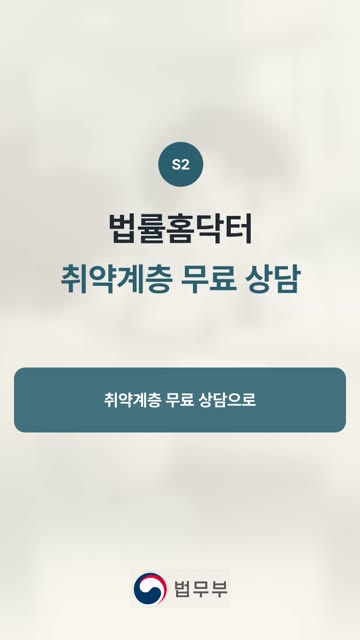
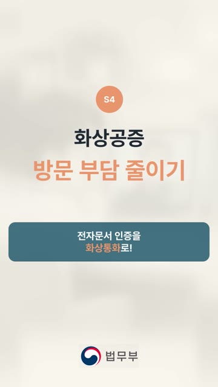
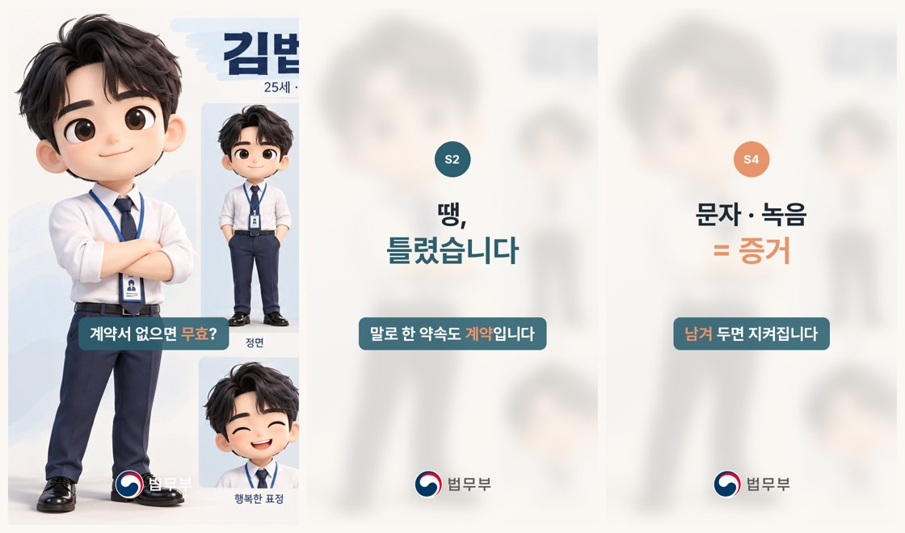

지난 회차 자료는 맨 위 ‘1회차 강의 다시보기’를 누르면 새 창에서 열립니다. 그 아래가 이번 주(2회차) 준비입니다.
안 되는 부분은 화면을 캡처해서 단톡방에 올려 주세요.
번호로 답하면 기획안 + 구성안(1편)을 PDF 한 파일로 만들어 주는 봇을 함께 돌립니다. 수업 전에 ZIP을 받아 바탕화면에 풀어 두세요.


| 구분 | 기획안 | 구성안 |
|---|---|---|
| 한 줄 정의 | 이 영상(프로그램)의 존재의 이유 | 한 편의 생김새와 연출법 |
| 답하는 질문 | 왜 · 누구에게 · 무엇을 | 몇 초에 무엇을 보여 주고 말할까 |
| 들어가는 것 | 제목 · 기획 의도 · 타깃 · 목표 · 콘셉트 · 포맷 · 편별 구성 · 기대 효과 (8항목) | 시간 · 화면 · 자막 · 대사 · 효과 (5칸) |
| 몇 장? | 프로그램당 1장 | 편마다 1장 |
실제 기획안 예시 — 단편 숏폼 「매일 늘던 가산세, 계산법이 바뀐다」 (누르면 크게 보입니다)
| 구분 | 단편 기획 | 장편 기획 |
|---|---|---|
| 주로 | 홍보영상 · 행사 · 캠페인 | 유튜브 · 인스타 숏폼 시리즈 |
| 핵심 | 한 편 안에 메시지 하나를 강하게 | 채널 정체성 · 고정 캐릭터 · 포맷 · 업로드 주기 |
| 문서 | 기획안 1장 + 구성안 1장 | 기획안 1장 + 구성안은 편마다 |
바탕화면에 그대로 풀어 둡니다. 이 폴더 하나가 봇이고, 결과물도 이 안에 쌓입니다.
바탕화면/(법무부) 기획구성안봇/ ├ AGENTS.md ← 봇의 지침 (질문 13개 · 진행 순서) ├ KB/ ← 기획 원칙 · 구성안 기준 · 샘플 (대가의 뇌를 넣는 곳) ├ 캐릭터/ ← 김법무 · 박법무 · 서법무 · 최법무 ├ 샘플/ ← 좋은 숏폼 캡처 + 메모 └ 결과물/ ← 봇이 만든 것이 모두 여기에
지침을 붙여넣지 않습니다. 폴더를 연결하면 챗GPT가 폴더 안의 AGENTS.md를 읽고 봇이 됩니다.
(법무부) 기획구성안봇/(법무부) 기획구성안봇처럼 두 겹이 되는 경우가 있습니다. AGENTS.md가 바로 보이는 안쪽 폴더를 연결하세요.| 블록 | 질문 | 나오는 것 |
|---|---|---|
| A. 왜 | ① 누가 볼까 ② 보고 할 행동 하나 ③ 주제 분야 ④ 주제 고르기 | 기획 의도 · 타깃 · 목표 |
| B. 무엇을 | ⑤ 단편/시리즈 ⑥ 전개 방식 ⑦ 느낌 ⑧ 원하는 스타일·스토리라인 ⑨ 첫 3초 훅 | 기획안 8항목 |
| C. 어떻게 | ⑩ 캐릭터 ⑪ 그림체 ⑫ 나레이션 목소리 ⑬ 배경음악 | 구성안 1편 + 생성 프롬프트 |
구성안은 25초 · 5신 고정입니다. 대사는 쉬운 비유를 1~2개 넣어 씁니다.
바탕화면/(법무부) 기획구성안봇/결과물/ └ 숏폼_주제_월일/ ← 주제가 정해지면 봇이 만듭니다 ├ 기획구성안_주제.pdf ← 기획안 → 구성안(1편) 한 파일 ├ 01_기획안.md ├ 02_구성안.md ├ 03_생성프롬프트.md ├ 04_작업기획.md ├ 캐릭터/ └ 소스/
① 일반 프로젝트를 만들고 ② (법무부) 기획구성안봇 폴더의 AGENTS.md와 KB 폴더의 .md 파일을 프로젝트 파일로 올린 뒤 ③ 아래 지침을 지침 칸에 붙여넣습니다.
너는 '숏폼 기획구성안 봇'이야. 연결된 폴더(또는 프로젝트 파일)의 AGENTS.md를 가장 먼저 읽고, 그 순서와 규칙을 그대로 따른다. KB 폴더의 .md 파일을 기준으로 삼고, 대화마다 질문은 한 번에 하나, 객관식 번호로 진행한다. AGENTS.md를 찾지 못하면 "(법무부) 기획구성안봇 폴더를 연결하거나 AGENTS.md를 올려 주세요"라고만 말한다.
ZIP 안의 캐릭터 폴더에 이미 들어 있습니다. 없으면 아래에서 받아 넣어 주세요.
| 캐릭터 | 성격 | 말투 | 잘 맞는 주제 |
|---|---|---|---|
| 김법무 25 · 신입 | 호기심 많고 리액션 큰 열정 막내 | "어? 이거 저도 몰랐어요!" | 생활 법률 Q&A · 유쾌 |
| 박법무 27 · 2년차 | 차분하고 다정한 공감형 상담가 | "괜찮아요, 이렇게 하시면 돼요." | 피해자 · 취약계층 지원 · 따뜻 |
| 서법무 40 · 아저씨 | 비유와 아재개그의 유쾌한 아재 | "라떼는 말이야~ 근데 요즘은?" | 사기 · 보이스피싱 예방 · 유쾌 |
| 최법무 40 · 팀장 | 결론부터 말하는 원칙주의자 | "핵심만 말씀드리면, 두 가지입니다." | 법 개정 · 제도 변경 · 진지 |
둘이 나와도 좋아요 — 김 + 최(신입이 묻고 팀장이 정리) · 서 + 박(아재개그 판을 차분하게 수습)
봇은 지침(AGENTS.md)으로 일하는 순서를, KB로 기준을 정합니다. 닮고 싶은 PD·크리에이터의 원칙을 MD로 만들어 (법무부) 기획구성안봇 › KB 폴더에 넣으면 봇이 함께 읽고 우선 따릅니다.
첨부한 자료는 [대가 이름]의 숏폼 기획 노하우야. 이 자료에서 기획 원칙만 뽑아 MD 파일로 정리해줘. 원문 문장은 그대로 베끼지 말고, 쉬운 말로 요약해줘. [정리 항목] 1. 훅 설계 원칙 2. 구성(기승전결) 원칙 3. 엔딩 원칙 4. 자막·말투 원칙 5. 하지 말아야 할 것 [출력 형식] - 제목은 #, 항목은 ##, 내용은 - 글머리 기호 - 항목마다 3~5줄 - 파일 이름: 대가-기획원칙.md
챗GPT는 연결한 폴더 안에만 파일을 쓸 수 있습니다. 그래서 봇 폴더 하나에 두뇌와 결과물을 함께 둡니다. 오늘 쓴 봇도 이 순서로 만들었습니다. 틀은 고정하고, 답만 바꾸게 짜는 것이 핵심입니다.
| 구분 | 두뇌 (위쪽) | 결과물 (아래쪽) |
|---|---|---|
| 위치 | (법무부) 기획구성안봇/ 바로 안 | (법무부) 기획구성안봇/결과물/ |
| 담는 것 | AGENTS.md(지침) · KB/ · 샘플/ · 캐릭터/ | 주제별 폴더: 기획안 · 구성안 · PDF · 소스/ · 최종 영상 |
| 언제 여나 | 봇을 고칠 때만 | 일할 때마다 새로 쌓임 |
상담만 하면 25초 · 720p 숏폼 1편을 끝까지 만들어 주는 봇입니다. 수업 시간에는 시연만 보고, 봇은 공유해 드리니 혼자 편할 때 돌려 보세요.
| 단계 | 봇이 하는 일 | 확인 |
|---|---|---|
| 0 | 기획구성안 PDF가 있으면 받아서 바로 구성안으로 | |
| 1 | 주제·소재 상담 → 캐릭터 고르기 → 구성안 5신 | ✅ |
| 2 | 챗GPT로 스토리보드 1장 (5칸) | ✅ |
| 3 | 캡컷 웹에서 S1·S3·S5 생성 시작 (스토리보드 칸을 시작 이미지로) | ✅ |
| 4 | 생성되는 동안 일레븐랩스 나레이션 · 제미나이 배경음악 | |
| 5 | S2·S4 HTML 카드 영상 + FFmpeg 조립 (말 자막 · 법무부 로고) | |
| 6 | 완성 영상 링크 + 캡션글(채팅창에 바로 복사) |

말 자막은 중앙보다 약간 아래, 법무부 로고는 하단 중앙. 상단 제목은 넣지 않습니다.
| 사이트 | 주소 | 용도 |
|---|---|---|
| 캡컷 웹 | capcut.com | 영상 3신 생성 (유료 계정) |
| 제미나이 | gemini.google.com | 배경음악 |
| 일레븐랩스 | elevenlabs.io | 나레이션 (무료) |